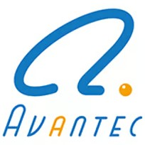
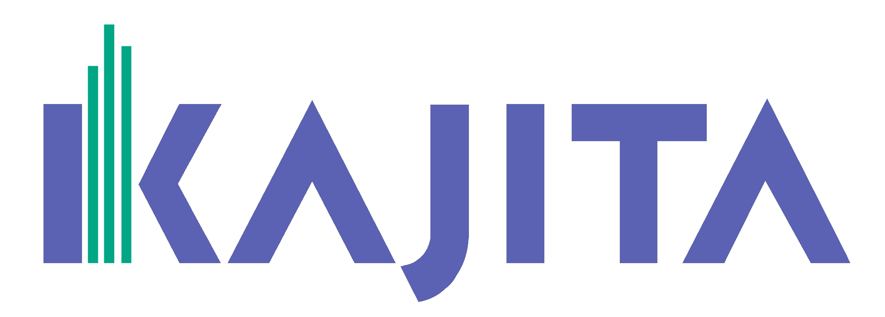
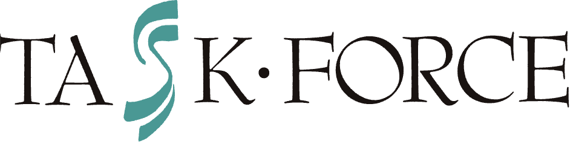
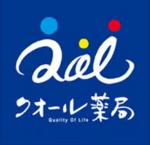

.png)
“採用コスト0円”の自社採用
AI採用担当者で
「自社採用」を増やして、
採用コストを削減する。
企業の自社サイトからの応募・採用を増やす採用支援サービスです。
AI採用担当者と応募導線の最適化、専属リクルーターを活用し、
自社サイトからの応募数増加と採用コスト削減を実現します。
HP経由応募数最大10倍
HP採用人数対前年比3倍
採用単価の削減最大150万円
\worktalkの特徴が分かる/資料ダウンロード ›
\簡単1分で完了/お問い合わせ ›
※導入企業様のAI採用担当者の事例です

\業界・分野を問わず多くの企業様に選ばれています/




Challenges
こんな採用課題はありませんか？
求人媒体・人材紹介の
採用コストが高い
採用コストが高い
採用単価を下げたい
自社サイト経由の
応募を増やしたい
応募を増やしたい
求人媒体・人材紹介に
依存したくない
依存したくない
応募数・採用数を
もっと増やしたい
もっと増やしたい
自社サイトのPV数など
データ分析ができていない
データ分析ができていない
採用担当者の
説明工数を減らしたい
説明工数を減らしたい
求職者に会社の魅力が
うまく伝わっていない
うまく伝わっていない
.png)
.png)
とは？
worktalk（ワークトーク）は、自社採用を増やし、採用コストを削減する採用支援サービスです。
「AI採用担当者」や「応募導線の最適化」、「応募者サポート」を通じて、自社サイトからの応募数•採用人数を増加させます。人材紹介や求人媒体への依存を減らしながら、企業独自の採用基盤づくりを支援します。AI時代に突入したからこそ、worktalkを通じて、持続可能な「自社採用」の仕組みを構築します。
「AI採用担当者」や「応募導線の最適化」、「応募者サポート」を通じて、自社サイトからの応募数•採用人数を増加させます。人材紹介や求人媒体への依存を減らしながら、企業独自の採用基盤づくりを支援します。AI時代に突入したからこそ、worktalkを通じて、持続可能な「自社採用」の仕組みを構築します。
Benefit
導入効果
導入企業の成果
不動産会社A様
自社サイト経由応募数
10倍に増加！
住宅会社B様
自社サイト経由採用人数
対前年比3倍！
IT•WEB会社C様
採用単価
150万円削減！
※効果には個人差があります。

※株式会社ウィルゲート様への導入実績より抜粋
成果につながる採用体験を
worktalkが実現します
Our Strength
選ばれる理由
01
簡単に
導入ができる
採用サイトの公開情報や求人票、採用ピッチ資料の情報を
もとに、原稿案を作成させていただきます。お客様は、
「原稿案をチェックして、修正依頼するだけ」で完成。採
用サイトへの設置も、URLを設定するだけ。60秒以内で簡
単に導入できます。
「原稿案をチェックして、修正依頼するだけ」で完成。採
用サイトへの設置も、URLを設定するだけ。60秒以内で簡
単に導入できます。


02
データをもとに
改善できる
動画のタイトルごとにクリック数が分析できるため、求職
者が何を知りたいのか把握できます。
取得したデータをもとに、説明内容やタイトルを変更する
ことで継続的に効果を高めていくことが可能です。(毎月3
回まで無料で変更できます。)
取得したデータをもとに、説明内容やタイトルを変更する
ことで継続的に効果を高めていくことが可能です。(毎月3
回まで無料で変更できます。)
03
企業への
興味を高められる
多くの企業が「認知」のために人材紹介サービスや求人媒
体、スカウト媒体などを積極的に利用されているが、「興
味」を持ってもらう仕掛けが弱いと感じています。応募前に
「文字を読む」から「説明を聞く」に応募前体験を変革
することで、応募数の最大化につなげます。
味」を持ってもらう仕掛けが弱いと感じています。応募前に
「文字を読む」から「説明を聞く」に応募前体験を変革
することで、応募数の最大化につなげます。

User Voice
お客様の声

株式会社ウィルゲート 専務取締役 共同創業者
吉岡 諒 様
株式会社ウィルゲートは、「売上や企業価値を高めるネオM&A仲介会社」です。ベンチャー、スタートアップ領域のM&A仲介に強みを持ち、創業事業のデジタルマーケティング支援からM&A成立後のPMIまで一気通貫で支援しています。
ウィルゲートのM&A事業は急成長中。導入後、ホームページ経由の応募が単月比400％増となり、採用コストを大幅に削減。2ヶ月で即戦力となる経験者採用に成功しました。結果として、応募の“量”だけでなく“質”の向上にもつながり、バランスの取れた母集団形成を実現しています。
ウィルゲートのM&A事業は急成長中。導入後、ホームページ経由の応募が単月比400％増となり、採用コストを大幅に削減。2ヶ月で即戦力となる経験者採用に成功しました。結果として、応募の“量”だけでなく“質”の向上にもつながり、バランスの取れた母集団形成を実現しています。

株式会社Grand Central 代表取締役CEO
北口 拓実 様
株式会社Grand Centralは、セールス領域に特化したコンサルティングカンパニーです。クライアントの課題分析から戦略立案、営業代行、さらにはインハウス化に向けたDX支援やセールスイネーブルメントまで、一気通貫したソリューションを提供しています。
導入後は、自社採用サイトのブランディングが確立され、新たな採用ルートの開拓に成功しました。これにより、外部媒体に依存しない自律的な母集団形成が可能となり、新卒・中途ともに確かな内定実績を創出。組織の持続的な成長を支える強固な採用基盤を構築しています。
導入後は、自社採用サイトのブランディングが確立され、新たな採用ルートの開拓に成功しました。これにより、外部媒体に依存しない自律的な母集団形成が可能となり、新卒・中途ともに確かな内定実績を創出。組織の持続的な成長を支える強固な採用基盤を構築しています。

成果につながる採用体験を
worktalkが実現します
Q&A
よくある質問
Q
料金はいくらですか？
Q
契約から納品まで、どれくらいの期間がかかりますか？
Q
社内で用意するものはありますか？
Q
採用サイトへの設置に手間はかかりませんか？
Q
AI人物の性別や年齢などは自由に設定できますか？
Q
なぜ応募数が増えるのですか？
Q
ホームページの閲覧数（PV）を増やす方法はありますか？
Contact
お問い合わせ
導入のご相談やご質問など、お気軽にご連絡ください。
{{LP_CF7_FORM}}
.png)
運営会社
プライバシーポリシー
Copyright © 2026 worktalk